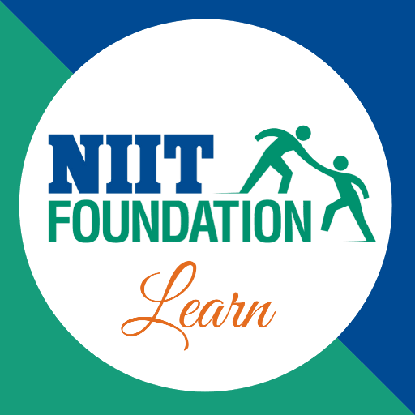

NIIT Foundation

Overview
Established in 2005, NIIT Foundation aims to provide education and skill development opportunities to underserved communities across India. The organization focuses on enhancing digital literacy, employability skills, and overall personal development through innovative programs and initiatives.
Programs and Initiatives
- Career Development Centers (CDCs): Focus on employability skills such as English communication, computer literacy, and work etiquette.
- Skill Development Centers: Offer short-term and job-oriented courses to bridge the gap between education and employment.
- IT Foundation Centers: Provide digital and professional skills to youth in tier-3 cities.
- Accessibility Programs: Initiatives like Microsoft's Tobii project to empower individuals with disabilities.
Regional Centers
NIIT Foundation operates through centers in various regions of India, including:
- North: Delhi, Haryana
- South: Tamil Nadu, Karnataka
- East: West Bengal, Odisha
- West: Gujarat, Maharashtra
Success Stories
The Foundation has positively impacted the lives of thousands, with many students securing jobs in industries such as IT, retail, and BPO. Their programs ensure that individuals from marginalized communities can achieve self-reliance and contribute to society.